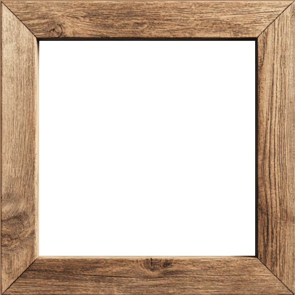
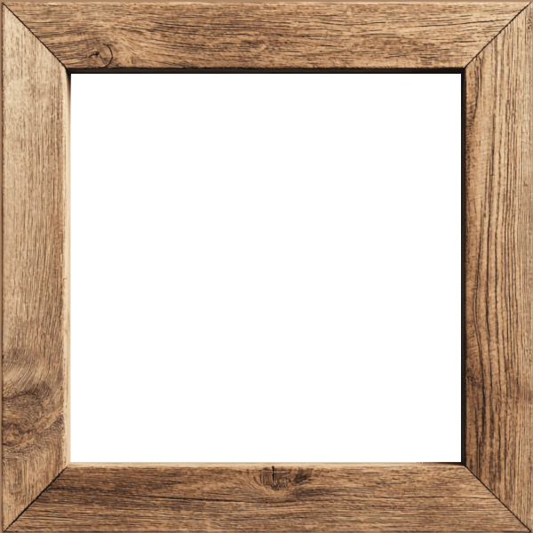

ϛᄅ.⅄ꓷƧⱯ

 

Product Organization
Model Products
Saturn
Kill Your Darlings
High Achievers
Next Level
By The Numbers
Whats Next
Some Final Thoughts
Every year we have a few topics that really change our trajectory and what we look like as a team - this year, it was the product org. Crazy to think less than 10 months ago most decisions were still being centralized on the shoulders of a few individuals. You all took this challenge and made it into something so much more than we ever could have imagined: ownership, performance, strategy, development priorities, operations, and customer handling.
Honestly, I could not even imagine how we could possibly run ASDY today without this setup. We've seen it in the KPIs, the meme filled product pulses, and the customers feedback. Your individual growth matched the product's growth step for step - you didn't just accept the challenge, you owned it - well done!
#jirastillneedslove #memegamestrong #selfmanaged
Starting with OTD, we were all so excited to have that first real top level data product running on the work and shoulders of multiple domains. After months of effort (and building up some impressive backlogs!) we finally came to the hard realization this wasn't going to scale in BW.
This one reminded me a lot of the early challenges with the design of DPs - everyone came together, worked as one, focused on the technical issues, and found a solution that would scale. You've continually refined the approaches and now have some of the most complicated data products in the company not only delivered but driving genuine value!
Both the warehouse and finance transformations wouldn't have been possible without this key bit of the puzzle. It gets said a lot, but this (DataOps Pipeline) is the start of yet another critical foundation for the future of the data mesh.
#backlogswerebig #bwsaysno
End of last year, we had a rough idea of the need to launch Saturn. We didn't know if we could, we didn't know where we could - this was going to be the year we would hopefully decide on not much more than a roadmap and where our future might be.
By mid year, we were not only miles ahead of schedule but had a pretty strong pathway on how to deliver the platform as well. What the team has done here (in less than a year!) is nothing short of phenomenal. It's brought a whole new bag of capabilities to the table, giving us a massive foundation to start the next phase of the data mesh on - all while genuinely bringing us into the "best in class" discussion.
We've always tried to stay away from solutions and instead build capabilities to grow the company on - and frankly, this is one absolute beast of a capability!
#roadtoapollo #platformbaby #wherearethegpus?
It wouldn't be an ASDY year without proactively killing one of our customer loved products - this year, the buddy system. Our most loved feature, the number one rated service, simply sent into retirement. We did this obviously with open eyes and 100% convinced we couldn't scale as a team or increase reactivity and performance if members focused only on their domains.
If the product orgs defined us this year, it's only because we let the buddy system go. I personally love this topic - I think it symbolizes our DNA perfectly: to remain "passionately impassionate"
Don't get too connected to our processes or ideas and be happy to disrupt ourselves - this constant change is how we've remained evergreen. We improved performance in all critical areas, customers understood why, and those relationships (while now different) were never truly lost - the partnerships, camaraderie, and friendships remained.
#lostbutnotforgotten #bffs
As a team, we've always been mindful of performance, diving into root causes to understand our issues and customer experiences. This year, that obsession paid off - each product org took ownership, understanding what drove issues (at the deepest level) and ensuring genuine fixes were in place.
System stability increased massively (~100% in recent months) we'll achieve maturity B in AOS, DP lead times reduced month on month, record high user rates, and our customer satisfaction survey came back better than expected for the third consecutive year!
We're only as good as our last delivery, so we do need to stay hungry and keep pushing to be the very best at what we do. With that said though, there's a time to be humble and a time to celebrate - this is celebration time!
#overachievers #99plusclub #cheers
It's crazy to think that in the last 3 years we've increased the volume of data, the number of regular users, number of refresh cycles, number of applications deployed, and the number of analysts we support - all with a net increase of only 1 headcount.
We finally have genuine machine learning use cases built and running on that infrastructure, and incredibly complex multi dimensional products like OTD paired with polished interfaces in Qlik. The warehouse teams transformed their performance this year with laser focus on root causes. We certainly weren't the reason, but we were a damn big enabler to their evolution.
We shifted the last remaining DRSs, we reengineered our Airflow process, and we pushed for the new DpAgent. We don’t spend much time advertising or promoting ourselves, but the silence from our systems and customers tells the real story - things are working, and it’s letting us ramp up as a function and as a company. The evolution the team undertook this year (both technically and organizationally) was impressive.
#darwinwouldbeproud
1 Empty Trash Click That Broke Everything (Up 100%)
52 Airflow DAGs Transitioned
211 Pages Of ARD Documentation (Up 123%)
0 September BW Meltdowns (Down 100%)
1 Component(s) Deployed With DXC (Up 100%)
1427 Unique Skywise Users (Up 27%)
4 Qlik Dashboards (Up 300%)
2 New Team Members
7000+ Daily Checks & Monitoring
58 DRS Retired
24TH JUNE Rudi Said "That's Too Much Documentation" (Up 100%)
This one's always the fun one - trying to use the magic 8-ball to guess what could possibly be on the cards for next year. This year was relatively clear: we were going to try and launch Saturn as an enabling platform for the future and clean up the rest of our underlying infrastructure and applications to bring the much needed stability for our customers (and ourselves!)
By the end of this year, we saw more and more products starting to interact with one another and the dependencies increase. We can see less noise and requests coming from the business (as a lot of the foundations are already available) so I would see many of us beginning to work more in an experimentation phase again - starting to converge some of the activities and work as small teams testing E2E solutions based on the previous year's lessons (in preparation for a potential reboot)
We know change will be coming, so we're in the unique position to have time, capabilities, and capacity to rethink completely how we could do things. Next year, I'm certain, is going to be a fun one. If this year was the year of Saturn, next year is that of Gumdr◌p
#crystalball #whatsagumdrop? #dontforgetops
After so many years of doing this, I can categorically say this is one of my favorite moments of the year - it's when I open up my notes, start to look at what we had planned at the start of the year and where we inevitably ended up. I think we can all get stuck in the week to week activities and sometimes lose track of just how amazingly far we've all come.
I recently discussed with someone how just years ago, the original Data Mesh aspirations were that “every person in the company would integrate data into their day to day operations, with data placed at the heart of almost all important decisions.” This was far from a fact at the time; it wasn't even something perceived as realistic. It was merely an ambition, a moonshot. And I think that's what I would like to remind you all of - be it the Data Mesh, be it Saturn, be it the ambition to be the very best data engineering team in the group - we seem to find a way of turning our moonshots into reality more often than not.
That’s something I certainly don't take for granted. Your expertise, enthusiasm, humor, humility, and shared belief in our goals - it's genuinely not the norm - you guys are not the norm! I want to thank you all yet again for everything you do to make this team what it is - thanks so very much for another incredible year!